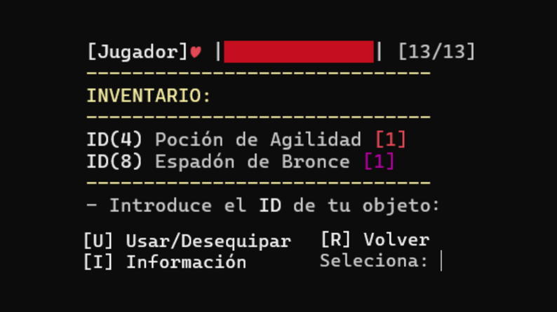
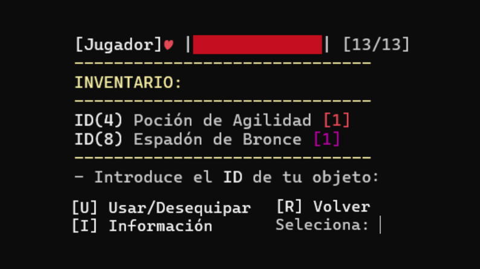
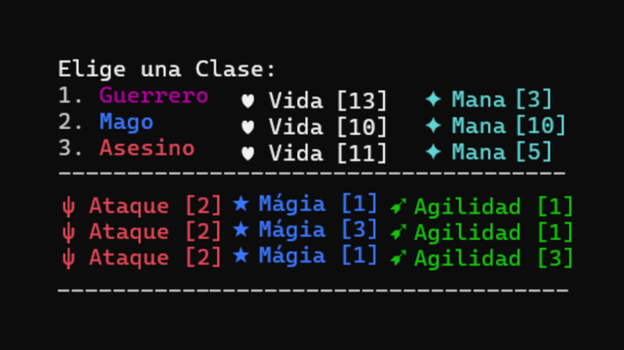
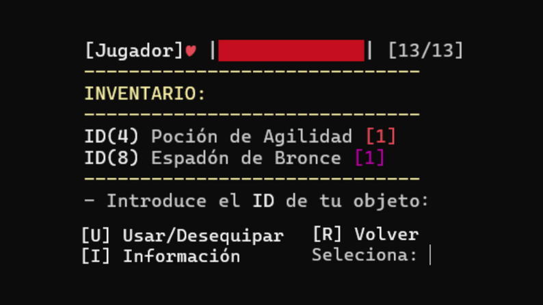

{r setup, include=FALSE} library(flexdashboard) library(DT) library(echarts4r) library(readr) library(dplyr) library(fmsb) library(tidyverse) library(xts) library(gapminder)
CastleCat ꩜
Un nostálgico RPG al estilo clásico de los años 70, donde encarnarás a un gato desesperado por salvar a su amada de las garras de un temido dragón.
Elige tu destino:
Guerrero, Mago o Asesino. Adéntrate en una
mazmorra llena de monstruos y tesoros encantados. Cada habitación puede
darte una ventaja… o sellar tu destino.
Usa sabiamente tus armas y estadísticas si quieres llegar vivo al jefe
final.
✦•┈๑⋅ Explora nueve pisos y enfrenta jefes ⋅๑┈•✦
Despeja tres pisos diferentes, con plantas generadas de forma aleatoria. No solo la habilidad será necesaria, también la suerte.
¡Una decisión mal tomada y tu corazón dejará de latir! ♥
Diseñado y programado por:
EternoDev y BlueLlama
10/2024 — Alicante (España)
CastleCat ©
Juego:


Guerrero:
Vida: 13 (la más alta)
Mana: 3 (bajo)
Ataque
mágico: 1 (bajo)
Agilidad: 1
(normal)
```{r, echo=FALSE} guerrero_stats <- data.frame( Estadística = c(“Vida”, “Mana”, “Ataque Mágico”, “Agilidad”, “Vida”), Valor = c(13, 3, 1, 1, 13) )
htmltools::div( style = “margin-top: -30px; height: 400px; overflow: visible;”, guerrero_stats |> e_charts(Estadística) |> e_polar(radius = c(“0%”, “100%”)) |> e_angle_axis( Estadística, axisLabel = list(fontFamily = “Cormorant SC”, fontSize = 18) ) |> e_radius_axis( min = 0, max = 15, nameTextStyle = list(fontFamily = “Cormorant SC”), axisLabel = list(fontFamily = “Cormorant SC”) ) |> e_line( Valor, coord_system = “polar”, color = “purple”, lineStyle = list(width = 3) ) |> e_area( Valor, coord_system = “polar”, itemStyle = list(color = “rgba(128, 0, 128, 0.3)”) ) |> e_legend(show = FALSE) |> e_tooltip(trigger = “item”) )
### Mago
<p style="font-size: 1.3em;">
<strong style="color: blue;">Mago:</strong><br> <strong>Vida:</strong> 8
<em>(la más baja)</em><br> <strong>Mana:</strong> 10 <em>(muy
alto)</em><br> <strong>Ataque mágico:</strong> 3 <em>(potente)</em><br>
<strong>Agilidad:</strong> 1 <em>(normal)</em>
</p>
```{r, echo=FALSE}
mago_stats <- data.frame(
Estadística = c("Vida", "Mana", "Ataque Mágico", "Agilidad", "Vida"), # repetir para cerrar círculo
Valor = c(8, 10, 3, 1, 8)
)
htmltools::div(
style = "margin-top: -30px; height: 400px; overflow: visible;",
mago_stats |>
e_charts(Estadística) |>
e_polar(radius = c("0%", "100%")) |>
e_angle_axis(
Estadística,
axisLabel = list(fontFamily = "Cormorant SC", fontSize = 18)
) |>
e_radius_axis(
min = 0, max = 15,
nameTextStyle = list(fontFamily = "Cormorant SC"),
axisLabel = list(fontFamily = "Cormorant SC")
) |>
e_line(
Valor,
coord_system = "polar",
color = "blue",
lineStyle = list(width = 3)
) |>
e_area(
Valor,
coord_system = "polar",
itemStyle = list(color = "rgba(0, 0, 255, 0.3)") # azul semitransparente
) |>
e_legend(show = FALSE) |>
e_tooltip(trigger = "item")
)
Asesino:
Vida: 11 (media)
Mana: 5
(moderado)
Ataque mágico: 1
(bajo)
Agilidad: 3 (alta)
```{r, echo=FALSE} asesino_stats <- data.frame( Estadística = c(“Vida”, “Mana”, “Ataque Mágico”, “Agilidad”, “Vida”), # repetir “Vida” para cerrar círculo Valor = c(11, 5, 1, 3, 11) )
htmltools::div( style = “margin-top: -30px; height: 400px; overflow: visible;”, asesino_stats |> e_charts(Estadística) |> e_polar(radius = c(“0%”, “100%”)) |> e_angle_axis( Estadística, axisLabel = list(fontFamily = “Cormorant SC”, fontSize = 18) ) |> e_radius_axis( min = 0, max = 15, nameTextStyle = list(fontFamily = “Cormorant SC”), axisLabel = list(fontFamily = “Cormorant SC”) ) |> e_line( Valor, coord_system = “polar”, color = “red”, lineStyle = list(width = 3) ) |> e_area( Valor, coord_system = “polar”, itemStyle = list(color = “rgba(255, 0, 0, 0.3)”) # rojo semitransparente ) |> e_legend(show = FALSE) |> e_tooltip(trigger = “item”) )
# Objetos {data-icon="fa-shield-halved"}
## Column {.tabset}
### Objetos
```{r echo=FALSE}
estadisticasCastleCat <- read_csv("ObjetosEstadisticasCastleCat.csv")
DT::renderDataTable(estadisticasCastleCat){r echo=FALSE} ataquesCastleCat <- read_csv("ObjetosAtaquesCastleCat.csv") DT::renderDataTable(ataquesCastleCat)
```{r echo=FALSE} probabilidades <- data.frame( Tipo = c(“Poción”, “Arma Física”, “Arma Mágica”), Probabilidad = c(0.50, 0.35, 0.15) )
colores <- list( list( type = “linear”, x = 0, y = 0, x2 = 1, y2 = 1, colorStops = list( list(offset = 0, color = “#274472”), list(offset = 1, color = “#5a7da0”) ) ), list( type = “linear”, x = 0, y = 0, x2 = 1, y2 = 1, colorStops = list( list(offset = 0, color = “#a12727”), list(offset = 1, color = “#d15a5a”) ) ), list( type = “linear”, x = 0, y = 0, x2 = 1, y2 = 1, colorStops = list( list(offset = 0, color = “#b89c48”), list(offset = 1, color = “#f1e18c”) ) ) )
item_styles <- lapply(colores, function(c) list(color = c))
probabilidades |> e_charts(Tipo) |> e_pie(Probabilidad, radius = c(“10%”, “70%”), label = list( fontFamily = “Cormorant SC”, fontSize = 14, formatter = “{b}: {d}%” ), emphasis = list( label = list( fontFamily = “Cormorant SC”, fontSize = 16, fontWeight = “bold” ) ), itemStyle = item_styles ) |> e_color(c(“#274472”, “#a12727”, “#b89c48”)) |> e_title(“Probabilidades de dropeo”, textStyle = list(fontFamily = “Cormorant SC”, fontSize = 18)) |> e_tooltip(trigger = “item”, textStyle = list(fontFamily = “Cormorant SC”, fontSize = 14)) |> e_legend(textStyle = list(fontFamily = “Cormorant SC”, fontSize = 14))
### Dropeo Botín
```{r echo=FALSE}
rangos_armas <- data.frame(
Rango = c("S", "A", "B", "C", "D", "E", "F"),
Probabilidad = c(0.02, 0.05, 0.10, 0.15, 0.20, 0.23, 0.25)
)
colores_rangos <- c(
"#b89c48", # S - dorado medieval
"#a12727", # A - rojo medieval
"#6a3d7c", # B - morado medieval
"#5a7da0", # C - azul claro medieval
"#7ba664", # D - verde claro medieval
"#7d7d7d", # E - gris medieval
"#a67a4a" # F - marrón claro medieval
)
rangos_armas |>
e_charts(Rango) |>
e_pie(Probabilidad, radius = c("10%", "70%"),
label = list(
fontFamily = "Cormorant SC",
fontSize = 14,
formatter = "{b}: {d}%"
),
emphasis = list(
label = list(
fontFamily = "Cormorant SC",
fontSize = 16,
fontWeight = "bold"
)
)
) |>
e_color(colores_rangos) |>
e_title("Dropeo por rango de armas",
textStyle = list(fontFamily = "Cormorant SC", fontSize = 18)) |>
e_tooltip(trigger = "item",
textStyle = list(fontFamily = "Cormorant SC", fontSize = 14)) |>
e_legend(textStyle = list(fontFamily = "Cormorant SC", fontSize = 14))```{r generar-frames-enemigos, results=‘asis’, echo=FALSE} enemigos <- read.csv(“enemigos.csv”, stringsAsFactors = FALSE)
for (i in 1:nrow(enemigos)) { cat(paste0(“###”, enemigos$Nombre[i], " [NVL: ", enemigos$Id[i]*2,
“]”), sep = ““)
cat(paste0(‘’))
cat(paste0(”Nombre — “, enemigos$Nombre[i],
"\n\n"), sep = "") cat(paste0("Vida — ", enemigos$Vida[i],”“),
sep =”“) cat(paste0(”Ataque — “, enemigos$Ataque[i], "\n\n"), sep = "") if
(enemigos$Pisobajo[i] == enemigos$Pisoalto[i]) cat(paste0("Aparece en el piso ",
enemigos$Pisobajo[i],”.“), sep =”“) else cat(paste0(”Aparece
entre los pisos “, enemigos$Pisobajo[i], " y
", enemigos$Pisoalto[i],”.“), sep =”“) }
# Jefes {.storyboard data-icon="fa-solid fa-crown"}
```{r generar-frames-jefes, results='asis', echo=FALSE}
enemigos <- read.csv("bosses.csv", stringsAsFactors = FALSE)
for (i in 1:nrow(enemigos)) {
cat(paste0("### ", enemigos$Nombre[i], " [NVL: ", enemigos$Id[i]*3, "]\n\n"), sep = "")
cat(paste0('<img src="', enemigos$Sprite[i], '" class="enemy-image"/>\n\n'))
cat(paste0("Nombre — ", enemigos$Nombre[i], "\n\n"), sep = "")
cat(paste0("Vida — ", enemigos$Vida[i], "\n\n"), sep = "")
cat(paste0("Ataque — ", enemigos$Ataque[i], "\n\n"), sep = "")
cat(paste0("Es el jefe del piso ", enemigos$Piso[i], ".\n\n"), sep = "")
}enemigos <- read.csv("enemigos.csv", stringsAsFactors = FALSE)
#Oculta Sprites de la Tabla
DT::datatable(
enemigos,
rownames = FALSE,
options = list(
columnDefs = list(
list(targets = which(names(enemigos) == "Sprite") - 1, visible = FALSE)
)
)
)bosses <- read.csv("bosses.csv", stringsAsFactors = FALSE)
#Oculta Sprites de la Tabla
DT::datatable(
bosses,
rownames = FALSE,
options = list(
columnDefs = list(
list(targets = which(names(enemigos) == "Sprite") - 1, visible = FALSE)
)
)
)enemigos <- read.csv("enemigos.csv", stringsAsFactors = FALSE)
enemigos |>
e_charts(Nombre) |>
e_bar(Ataque, stack = "gr", name = "Ataque") |>
e_bar(Vida, stack = "gr", name = "Vida") |>
e_color(c("#a12727", "#d15a5a")) |>
e_x_axis(
name = "Nombre",
min = 1,
max = 8,
splitNumber = 1,
nameTextStyle = list(fontFamily = "Cormorant SC"),
axisLabel = list(rotate = 45, fontFamily = "Cormorant SC")
) |>
e_y_axis(
name = "Estadísticas",
nameTextStyle = list(fontFamily = "Cormorant SC"),
axisLabel = list(fontFamily = "Cormorant SC")
) |>
e_legend(
right = 0,
textStyle = list(fontFamily = "Cormorant SC")
) |>
e_tooltip(
trigger = "axis",
textStyle = list(fontFamily = "Cormorant SC")
)
bosses <- read.csv("bosses.csv", stringsAsFactors = FALSE)
bosses |>
e_charts(Nombre) |>
e_bar(Ataque, stack = "gr", name = "Ataque") |>
e_bar(Vida, stack = "gr", name = "Vida") |>
e_color(c("#274472", "#5a7da0")) |> # nuevos colores: verde oliva y verde oscuro
e_x_axis(
name = "Nombre",
min = 1,
max = 8,
splitNumber = 1,
nameTextStyle = list(fontFamily = "Cormorant SC"),
axisLabel = list(rotate = 45, fontFamily = "Cormorant SC")
) |>
e_y_axis(
name = "Estadísticas",
nameTextStyle = list(fontFamily = "Cormorant SC"),
axisLabel = list(fontFamily = "Cormorant SC")
) |>
e_legend(
right = 0,
textStyle = list(fontFamily = "Cormorant SC")
) |>
e_tooltip(
trigger = "axis",
textStyle = list(fontFamily = "Cormorant SC")
)